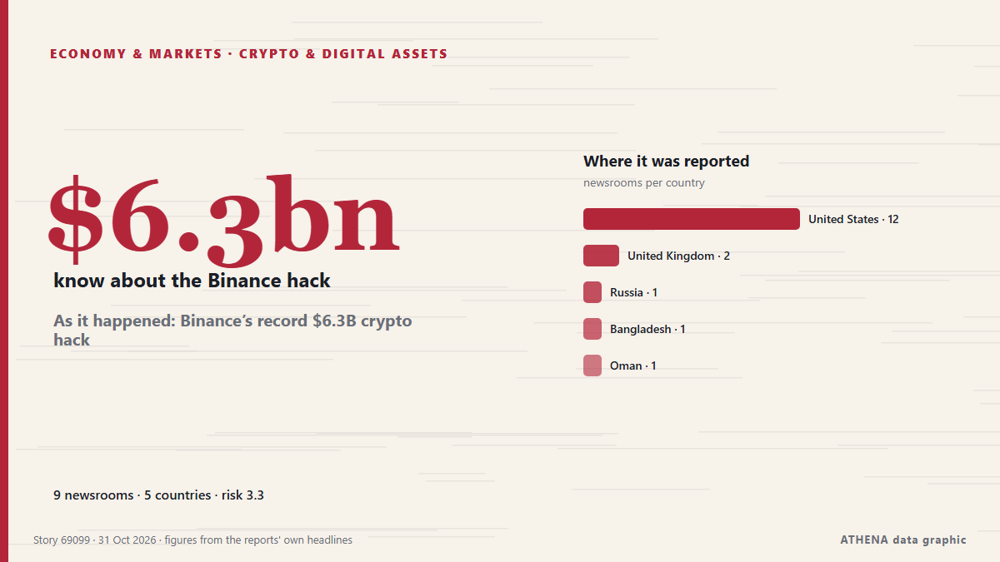

As it happened: Binance’s record $6.3B crypto hack

How Binance’s $6.3 billion hack unfolded, from the first onchain alerts to $3 billion in frozen funds and a widening security investigation. из Cointelegraph
Независимые источники: 9 изданий в 5 странах, с 29 окт.; первым сообщил Cointelegraph; освещение идёт на спад. ATHENA оценивает риск как умеренный (3.3/10), прежде всего из-за тяжести описываемого ущерба и географического и отраслевого охвата. Уверенность — 85 % (высокая); подтверждают независимые источники: 9 изданий, средняя надёжность источников — 75 %. СМИ по странам: Соединенные Штаты (12), Великобритания (2), Россия (1). Освещение: с 29 окт. по 31 окт., 42 ч.
Почему это важно: Экономические и рыночные события отражаются на ценах, занятости, стоимости заимствований и инвестиционных решениях.
Что изменилось: 11 новых сообщений от 9 редакций за 24 часа до 31 окт..
Первый заголовок: Binance hack losses exceed total market theft over past two years — expert
Заголовки приводятся на английском языке, как они были опубликованы.
Коротко в цифрах
Отобрано, оценено и написано по опубликованной методологии ATHENA. Ни один редактор не вмешивается в отдельные события. Как это создаётся ›
| 29 Oct 21:24 UTC | 2 |
|---|---|
| 29 Oct 23:24 UTC | 0 |
| 30 Oct 01:24 UTC | 0 |
| 30 Oct 03:24 UTC | 0 |
| 30 Oct 05:24 UTC | 0 |
| 30 Oct 07:24 UTC | 1 |
| 30 Oct 09:24 UTC | 0 |
| 30 Oct 11:24 UTC | 4 |
| 30 Oct 13:24 UTC | 0 |
| 30 Oct 15:24 UTC | 4 |
| 30 Oct 17:24 UTC | 1 |
| 30 Oct 19:24 UTC | 3 |
| 30 Oct 21:24 UTC | 1 |
| 30 Oct 23:24 UTC | 0 |
| 31 Oct 01:24 UTC | 0 |
| 31 Oct 03:24 UTC | 1 |
| 31 Oct 05:24 UTC | 0 |
| 31 Oct 07:24 UTC | 0 |
| 31 Oct 09:24 UTC | 0 |
| 31 Oct 11:24 UTC | 0 |
| 31 Oct 13:24 UTC | 1 |
| 30 Oct 17:24 UTC | 2.7 |
|---|---|
| 30 Oct 20:42 UTC | 3.7 |
| 31 Oct 14:59 UTC | 3.3 |
Откуда эти цифры
Значимость
Риск
Уверенность
Освещение — кто сообщил и когда
заголовок в оригинале · открывает источник- Cointelegraph · Соединенные ШтатыBinance hit by $6.3B hack, the largest in cryptocurrency history
- The Block · Соединенные ШтатыBinance investigating hack as suspicious outflows reach up to $5.8 billion
- City A.M. · ВеликобританияCrypto giant Binance hit by ‘largest hack in history’
- Cointelegraph · Соединенные ШтатыBinance says it holds $5B in matching tokens to cover hack losses
- Cointelegraph · Соединенные ШтатыFBI and Secret Service join response to Binance’s $6.3B hack
- The Block · Соединенные ШтатыBinance says it has $6.34 billion ready to cover hack losses
- Financial Times - Markets · ВеликобританияWhat we know about the $6.3bn Binance hack
- TASS (English) · РоссияBinance hack losses exceed total market theft over past two years — expert
- Cointelegraph · Соединенные ШтатыAs it happened: Binance’s record $6.3B crypto hack
- Cointelegraph · Соединенные ШтатыRecap: How Binance’s record $6.3B hack unfolded
- Forbes Business · Соединенные ШтатыBinance Cofounder Asks Musk Not To ‘Troll’ After Record $6.3 Billion Crypto Hack
- New York Times Business · Соединенные ШтатыBinance Was Hacked. What Protections Exist for Crypto Customers?
- PYMNTS · Соединенные ШтатыBinance Hack Tests Its Pledge to Cover Customer Losses
- Forbes Business · Соединенные ШтатыBinance Says It Plans To Resume Withdrawals This Weekend After $6.3 Billion Hack
- The Block · Соединенные ШтатыPresident Trump says they’re looking into Binance hack as calls grow for crypto rules
- The Daily Star — page reader · БангладешBinance hit by largest-known $6.3b crypto hack
- Oman Observer · ОманWhat protections exist for Binance’s customers?
- CNA (Channel NewsAsia) · СингапурBinance says it has covered 90% of losses from $6.3 billion hack so far